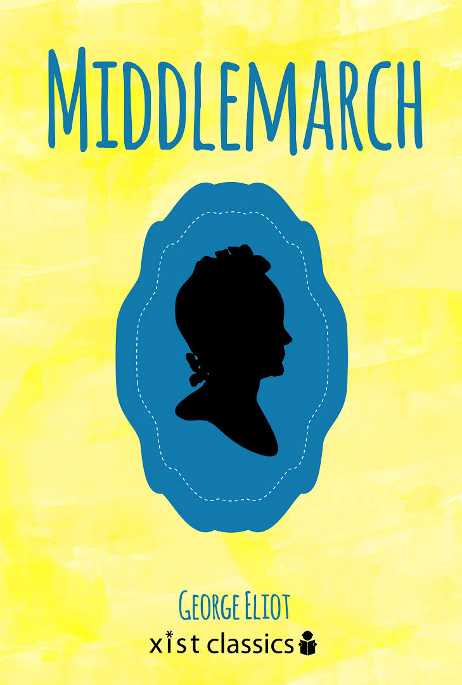

BOOK GALLERY
Gulliver's Travel

Jonathan Swift
Gulliver's Travels was first published in 1726, and three centuries later it remains in full force. This
famous satirical novel is both an adventure story and a devious philosophical reflection on the constitution
of modern societies. ...
Readmore
Great Expectations

Charles Dickens
Great Expectations is the thirteenth novel by Charles Dickens and his penultimate completed novel. It depicts
the education of an orphan nicknamed Pip. It is Dickens' second novel, after David Copperfield, to be fully
narrated in the first person.
Readmore
Middlemarch

George Eliot
Middlemarch, A Study of Provincial Life is a novel by the English author Mary Anne Evans, who wrote as George
Eliot. It first appeared in eight installments in 1871 and 1872. Set in Middlemarch, a fictional English
Midland town, in 1829 to 1832, it follows distinct, intersecting stories with many characters.
Readmore
A Passage To India

E. M. Forster
A Passage to India is a 1924 novel by English author E. M. Forster set against the backdrop of the British Raj and the Indian independence movement in the 1920s.
Readmore
The Alchemist

Paulo Coehlo
The Alchemist is a novel by Brazilian author Paulo Coelho which was first published in 1988. Originally written in Portuguese, it became a widely translated international bestseller.
Readmore
Beloved

Tony Morrison
Beloved is a 1987 novel by American novelist Toni Morrison. Set in the period after the American Civil War, the novel tells the story of a dysfunctional family of formerly enslaved people whose Cincinnati home is haunted by a malevolent spirit.
Readmore